| TODO: This page needs to be reorganized: progression from simple to more complex use is a bit circular.. (See: To-Do List) |
Contents
- 1 First View
- 2 Basic Footnotes
- 3 Footnote Numbering
- 4 Alternate Footnote Locations
- 5 Footnote Formatting
- 6 Footnotes in Floats
- 7 Footnotes in a box
- 8 Placing Footnotes Manually
- 9 Suppressing Footnotes Entirely
- 10 Color of Footnote Links that Refer to the Same Page
- 11 Changing footnote interlinespace
- 12 Special Needs
First View
-
\setuppapersize[A7] \starttext \section{First} Way to \ConTeXt\footnote{First footnote.} is painful. \section{Second} But \ConTeXt\ is amazing.\footnote{Second footnote} \placetable {Complex Table\footnote{A table head footnote.}} {\startlocalfootnotes \placelegend {\starttable[|l|l|] \HL \NC First Column \NC Second Column \NC \FR \HL \NC East\footnote{Footnote inside graphic.} \NC North \NC \FR \NC West \NC South \NC \LR \HL \stoptable} {\placelocalfootnotes} \stoplocalfootnotes} \stoptext
- 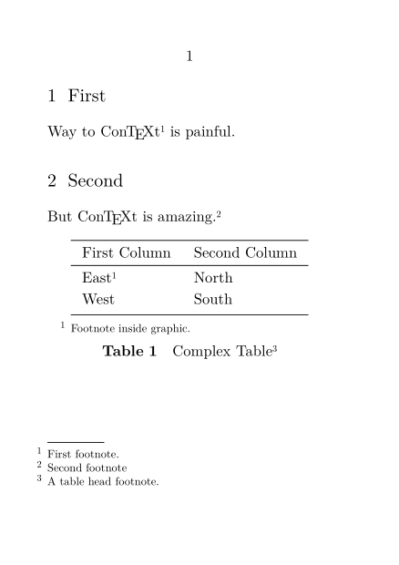
Here we have footnotes of two outer ones, a local one (in the table) and a postponed one (in the graphic).
Basic Footnotes
For basic footnotes, simply use \footnote[reference]{footnote text}. The reference is optional, and can be used to refer to the same footnote again. Footnotes can be referenced with the usual \in and \at macros (see References), or the note itself can be reproduced with \note[reference]. For example:
-
\setuppapersize[A7] \starttext This\footnote[footA]{Or that, if you prefer.} is a sentence with a footnote\footnote{Actually, two footnotes; this one and \in{footnote}[footA] on \at{page}[footA], denoted by \note[footA].}. \stoptext
Thanks to Oblomov, it’s also possible to use footnotes in footnotes, as in this example.
-
\setuppapersize[A7] \starttext This\footnote{Or that\footnote{Or possibly even the other.}, if you prefer.} is a sentence with a footnote. \stoptext
- 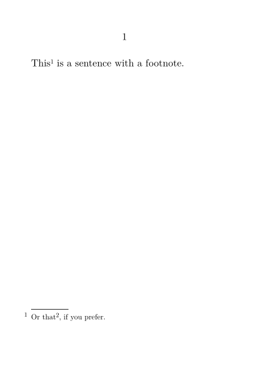
Footnote Numbering
You can setup the exact behaviour of footnotes with \setupnotation[footnote] or \setupfootnotes.
For example, to use footnotes with standard footnote symbols like asterisks and daggers (which ConTeXt has defined as the conversion "set 2"), with the footnote counter resetting on each page, one would use the following:
-
\setuppapersize[A7] \setupnotation[footnote][way=bypage,numberconversion=set 2] \starttext This\footnote[footA]{Or that, if you prefer.} is a sentence with a footnote\footnote{Actually, two footnotes; this one and \in{footnote}[footA] on \at{page}[footA], denoted by \note[footA].}. \stoptext
This produces the following footnotes:
- 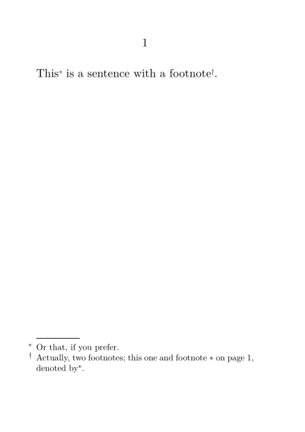
Alternate Footnote Locations
The \setupnotation command offers some options for the placement of footnotes; for instance, the location=columns option places the footnotes in a single column (of a multicolumn page) rather than across the whole page. The location=text option places the footnotes in text at a location specified by \placefootnotes; this can be easily used to create endnotes, or even to place footnotes after each paragraph or subsection.
-
\setuppapersize[A7] \setupnotation[footnote][location=text] \starttext This\footnote[footA]{Or that, if you prefer.} is a sentence with a footnote\footnote{Actually, two footnotes; this one and footnote \note[footA].}. \placefootnotes This is some more text, with more footnotes\footnote{Specifically, this one.}. \placefootnotes \stoptext
- 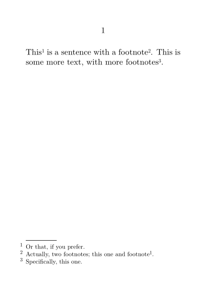
Footnotes at the end of each chapter
Another elegant example places all footnotes in a subject (unnumbered section) at the end of each chapter. It is intelligent and will not create an empty subject when there are no footnotes to be placed. At no extra cost, the subject title "Footnote" will be singular or plural depending if there is only one or several footnotes to be placed:
\startsetups[chapter:after] \ifcase\rawcountervalue[footnote]\relax \or \startsubject[title=Footnote] \placefootnotes \stopsubject \else \startsubject[title=Footnotes] \placefootnotes \stopsubject \fi \stopsetups \setupnotes[location=none] \setupnotation[way=bychapter] \setuphead[chapter][aftersection=\setups{chapter:after}] \starttext \startchapter[title={Chapter One}] This one\footnote{is placed}. And\footnote{this one is too}. \stopchapter \chapter[title={Chapter Two}] But this one\footnote{is not flushed}. \startchapter[title={Chapter Three}] Unless \type{\stopchapter} was invoked. \stopchapter \startchapter[title={Chapter Three}] On a chapter with\footnote{footnote}. \stopchapter \stoptext
You can also just use \endnote and \placeendnotes.
Footnotes in the margin
First we switch off footnote placement, then we place them manually into the margin.
\setupnote[footnote][location=none] \setupnotation[footnote][ align=flushleft, location=serried, width=broad, ] \setuptexttexts[margin][] [{\framed[% align={right,bottom}, frame=off, height=\textheight, width=\rightmarginwidth ]{\placenotes[footnote]}}]
... but not at the bottom
Hraban wanted numbered margin notes, starting in on the same line as the referenced text (like a combination of \inmargin and \footnote). Wolfgang answered:
The only way I found to achieve this is by flushing the notes at the end of each footnote entry which can be done with the next key. The positioning of each margin text is tricky because \placenotes adds skips at the begin of the block (which can be reduced with \placelocalnotes) but a inline version of the command (e.g. \placeinlinenotes) which flushes the notes without vertical skips and a rule at the begin would help.
\define\PlaceFootnote {\inrightmargin{\vtop{\placelocalnotes[footnote][before=,after=]}}} \setupnote [footnote] [location=text, bodyfont=, next=\PlaceFootnote] \setupnotation [footnote] [alternative=serried] \setuplayout [width=12cm, rightmargindistance=0.5cm, rightmargin=5cm] \starttext \dorecurse{6}{\input ward\expanded{\footnote{This is a footnote \recurselevel}} } \stoptext
| TODO: It got a bit easier in LMTX, we must adapt the example. (See: To-Do List) |
Footnote Formatting
You can change the font used in the footnotes with \setupfootnotedefinition.
Footnotes can be placed in multiple columns, using the n=number option of \setupnotes or \setupnote.
-
\setuppapersize[A7] \setupnotes[footnote][n=3] \starttext This\footnote[footA]{Or that\footnote{Or the other.}, if you prefer.} is a sentence with a footnote\footnote{Actually, two footnotes; this one and \in{footnote}[footA] on \at{page}[footA], denoted by \note[footA].}. \stoptext
- 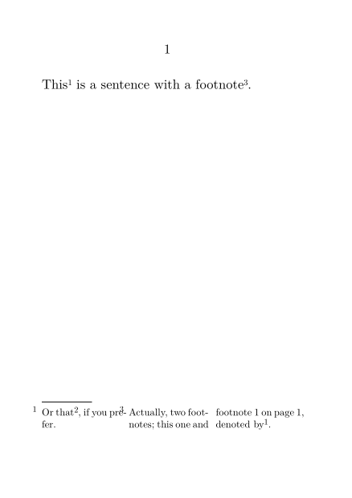
| TODO: This is ugly, and points up some ConTeXt bugs that need to be fixed. (See: To-Do List) |
Footnotes in pagraph form
When enabling footnotes (actually notes and linenotes) in pagraph form, there is some risk in having no right separation between body and the notes. This can be partially avoided using width=broad (Hans dixit).
\setupnote [footnote] [paragraph=yes] \setupnotation [footnote] [alternative=serried, width=broad, distance=.5em, display=no] \starttext \dorecurse{500}{text text text\footnote{note} } \stoptext
Footnotes in Floats
Floating objects have problems with normal footnotes, because they are likely to float to another page from the page on which they were defined, thus getting the footnotes out of order. Thus, to include footnotes in a float, one must use local footnotes. This table, which uses the \placelegend command to create a place for the footnotes, illustrates the process:
-
\startlocalfootnotes \placetable{A table with footnotes.} \placelegend {\strut\starttable[|l|r|] \HL \VL One\footnote{First} \VL Two\footnote{Second} \VL\FR \VL Three\footnote{Third} \VL Four\footnote{Fourth} \VL\LR \HL \stoptable} {\placelocalfootnotes} \stoplocalfootnotes
- 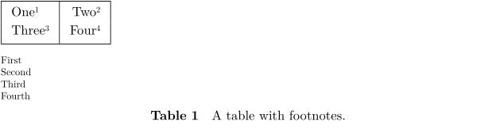
When using natural tables, the above leads to alignment problems. An alternative is to use:
-
\setuppapersize[A7] \defineframed[noteframed] \setupframed[noteframed] [width=\hsize, frame=off, %align=right, %height=fit, top=\hbox\bgroup, bottom=\egroup] \starttext \startlocalfootnotes \placetable {Caption} {\placelegend {\bTABLE \bTR\bTD One\footnote{First} \eTD\bTD Two\footnote{Second} \eTD\eTR \bTR\bTD Three\footnote{Third} \eTD\bTD Four\footnote{Fourth} \eTD\eTR \eTABLE} {\noteframed{\placelocalfootnotes}}} \stoplocalfootnotes \stoptext
- 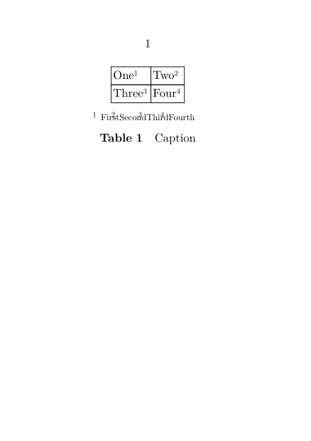
Footnotes in a box
Before LMTX, it was necessary to add the command \automigrateinserts (for example before \starttext) in order to correctly handle the placement of footnotes within a box such as \framed or \placeongrid...
Placing Footnotes Manually
In some cases, ConTeXt’s footnoting system may not be able to do exactly what you want. (The examples mentioned were outdated.) Many of these cases can be handled by using the \footnotetext command (which creates a footnote without placing the corresponding symbol in the text) and the \note command (which places the footnote symbol in the text, but does not create a footnote).
For example, to create a footnote to a footnote to a footnote, all but the first footnotes are created with \footnotetext commands, which are placed in the main text – thereby ensuring that the footnotes are numbered and appear in the correct order. Then, these footnotes are referenced by \note commands within the relevant footnotes. In this example, the lines are broken for clarity; note the % at the end of each line to prevent spurious spaces in the text.
-
\setuppapersize[A7] \starttext This% \footnote{Or that\note[footB], if you prefer.}% \footnotetext[footB]{Or possibly even the other\note[footC].}% \footnotetext[footC]{It could be something entirely different.} is a sentence with nested footnotes. \stoptext
- 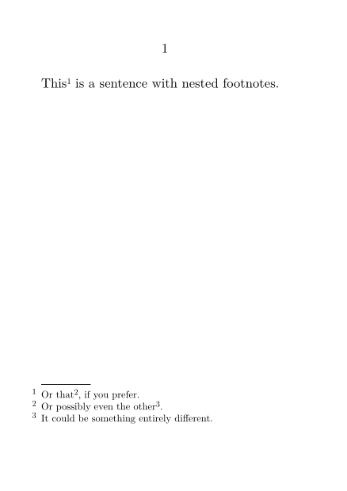
Suppressing Footnotes Entirely
The boolean \notesenabled controls whether footnotes are processed at all. If set to false, invocations of \footnote will be ignored. After it is set to true again ConTeXt will pick up the footnote counters at their previous state, so numbering will continuous.
-
\setuppapersize [A7] \starttext \dorecurse {2} { foo \footnote {bar} baz \par } \notesenabledfalse \dorecurse {3} { foo \footnote {bar} baz \par } \notesenabledtrue \dorecurse {2} { foo \footnote {bar} baz \par } \stoptext
- 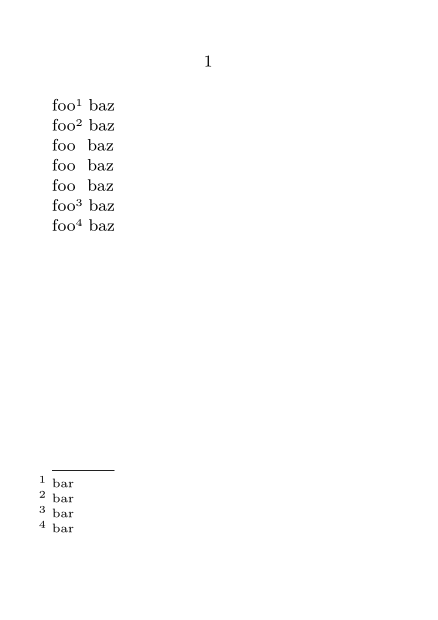
Color of Footnote Links that Refer to the Same Page
If you have set footnotes to be interactive and have noticed that your footnote links become red, it is because they are linked to content on the same page on which they appear. This means they are governed by \setupinteraction’s attribute contrastcolor, rather than color.
To fix the redness (or change it to a different color), try:
\setupinteraction[state=start,color=black,contrastcolor=black]
You can also set the colors to empty (just a comma) to avoid changing text color at all.
Changing footnote interlinespace
If you want to change the interlinespace of footnotes without impacting the rest of the document, try:
\startsetups[footnote:interlinespace] \setupinterlinespace[line=2.8ex] \stopsetups \setupnote[footnote][setups=footnote:interlinespace]
Special Needs
There are numerous ways to display and format footnotes. The following section gathers solutions to some special tasks asked on the mailing list.
Hyphenation
- Is there a way to turn off hyphenation for the main body of my text, but enable it for the footnotes?
\setupnote[footnote][align={normal,hyphenated}] \setupalign[hyphenated] \input tufte \footnote{\input tufte \relax} \par \setupalign[nothyphenated,stretch,tolerant] \input tufte \footnote{\input tufte \relax} \par
Mark Placement
- How can I change the placement of the footnote mark?
Currently, footnotes are set so that the left end of the text of the footnote is aligned with the left edge of the text, and the footnote number hangs out into the margin. Is it possible to change this? (For instance, suppose I would like the number aligned to the text-edge, and then a fixed-width space, and then the text?)
This behavior is controlled by the location key of \setupnotation. Here are some examples:
Note number is typeset in an area with a width of 1 cm, aligned at the left of the text area:
-
\setuppapersize[A7] \starttext \showframe \setupnotation[footnote][location=left,width=1cm] \setupnote[footnote][location=page,numbercommand=] test \footnote{test} \stoptext
produces
- 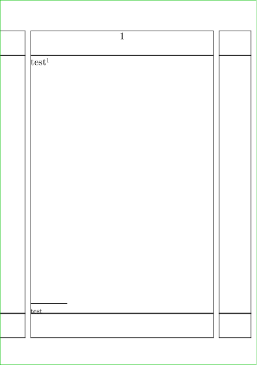
Suppose that one wants a width of 1.5 em. Then
\setupnote[footnote][margindistance=0em,command=\myfootnotecommand] \setupnotation[footnote][location=left,hang=1] \def\myfootnotecommand#1{\hbox to 1.5em{#1.}}
Line Spacing
- Can I change the line spacing of a footnote independently of that of the main text?
The way to do this is not obvious, but this is the code you need to use:
\def\setnotebodyfont {\switchtobodyfont[your desired font size]\setupinterlinespace[your desired spacing]}
Placement in Bidirectional Documents
- Can the footnote rule be placed on the right-hand side?
This is possible via setting the rule key of \setupnote and \definenote. In right-to-left documents it is usually desirable to have right-to-left footnotes, where right-aligned footnote rules make more sense aesthetically. Set rule=right to achieve this..
In a BiDi document the direction of the surrounding text where the \footnote is invoked determines the direction of the footnote block to come later. Therefore, some footnotes may be right-to-left whereas others can be left-to-right. Note that the text of the footnote does not play a role here. The style designer decides whether left or right footnote rules make more sense. However, there is a third option: setting rule=paragraph looks at the first paragraph in the footnote block and let that determine the position of the footnote rule. In other words, if the footnote block of the page starts with an RTL text we end up with a right-aligned footnote rule and a left-aligned rule is typeset otherwise. (The first line/paragraph of the footnote block on a page need not correspond to the start of a footnote; it can rather be the leftover from a long footnote that started on some previous page.)
For more fancy footnote rules, you can use rulecommand=\MyRuleCommand. Look at the definition of \normalnoterule in strc-not.mkvi for a starting point.
Verbatim Text in Footnotes
Verbatim text in footnotes can only be added with buffers and \typebuffer (otherwise compilation will break).
Inline verbatim text may be used with \type, but it will affect your spacing.
It is better to add inline verbatim with buffers and \typeinlinebuffer.
The difference is shown in the following sample:
-
\setuppapersize[A6, landscape] \setuppagenumbering[location=none] \setupbodyfont[16pt] \starttext \startbuffer \doif{\a}{\b}{\c. x z} \stopbuffer \typebuffer[option=TEX]\footnote{\typebuffer[option=tex]} \footnote{\type[option=tex]{\doif{\a}{\b}{\c. x z}}} \footnote{\type[option=tex, compact=absolute]{\doif{\a}{\b}{\c. x z}}} \footnote{\typeinlinebuffer[option=tex]} \stoptext
- 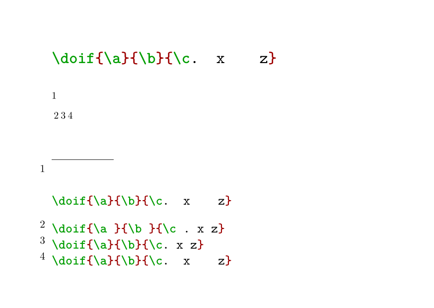
With \type, space needs to be compacted, so there are two options:
-
allis the default value. it add a blank space after any TeX command and it compacts many spaces into a single one. -
absoluteremoves the extra blank space after TeX commands, but it has to compact many spaces into a single one. - In contrast, using \typeinlinebuffer doesn’t alter blank spaces (either by adding, or by compacting them).